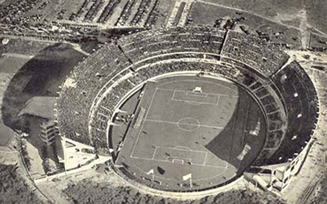
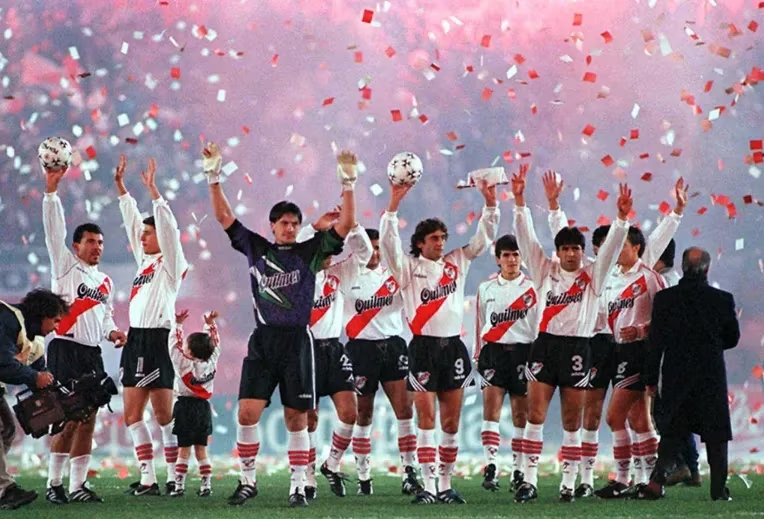
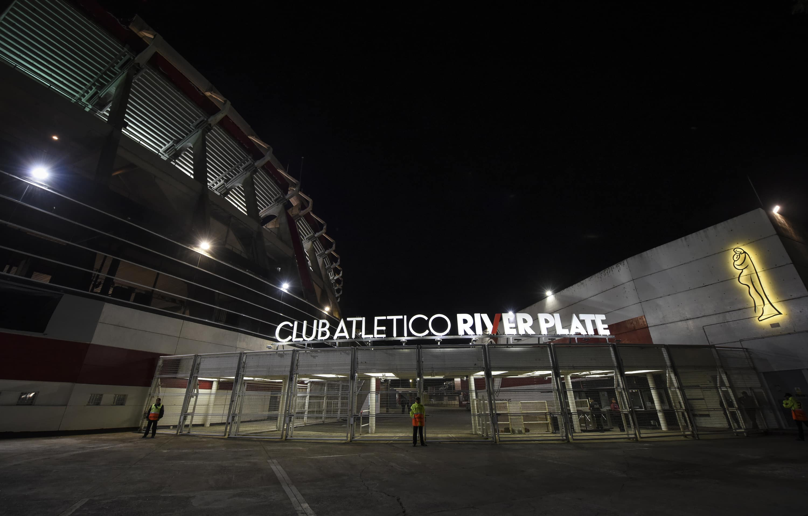

CLUB ATLETICO RIVER PLATE
Vivir y jugar con Grandeza
Historia
El Club Atlético River Plate es una entidad polideportiva de Argentina. Fue fundado el 25 de mayo de 1901 en el barrio de La Boca, tras la fusión de los clubes Santa Rosa y La Rosales, y su nombre proviene de la antigua denominación que se le daba en el inglés británico al Río de la Plata. Su principal actividad es el fútbol masculino profesional, el cual participa en la Primera División de Argentina. Disputa sus partidos en el estadio Monumental, el de mayor capacidad en Sudamérica; y el segundo en el continente, con una capacidad para 83 214 espectadores. River Plate es uno de los clubes más exitosos del mundo con un total de 70 títulos en su palmarés. Es el club más ganador de la Primera División de Argentina, con 38 campeonatos conseguidos —incluyendo el campeonato argentino de 1920 ganado en la era amateur del fútbol argentino—. También es el tercer club más ganador de copas nacionales con 14 títulos. Es el segundo club más ganador de la Copa Argentina con tres títulos y el más ganador de la Supercopa Argentina con dos trofeos. Ostenta el récord de ser el club más ganador del fútbol argentino desde su profesionalización en 1931 sumando 67 títulos oficiales.
A lo largo de su historia consiguió importantes récords a nivel nacional, donde destaca ser el líder de la tabla histórica de Primera División, además de ser el que más partidos ganó, el que menos perdió, el que más goles marcó y el que menos recibió, y es también el que más temporadas disputó en la máxima categoría del fútbol argentino. Además, es el equipo que más veces ha conseguido un tricampeonato de liga, en cuatro oportunidades y el primer y único club en ser bicampeón de la Copa Argentina. Es el tercer club más laureado en el continente americano sumando 12 conquistas internacionales y llega a la suma de 18 trofeos contabilizado las extintas copas organizadas por la AFA y la AUF como la Cup Tie Competition y la Copa Aldao, siendo el máximo ganador de este último certamen internacional con cinco conquistas. 1819 Fue el primer equipo argentino en conseguir la triple corona. Además, en 2015 se convirtió es el único club sudamericano en ganar las tres competiciones de Conmebol durante un mismo año y el único en ganar las cuatro competiciones de manera consecutiva; Copa Libertadores, Sudamericana, Recopa y League-Sudamericana.
En la máxima competición continental disputó un total de siete finales y se posiciona primero en la tabla histórica de la competición, siendo también el club argentino que más veces jugó el certamen con 37 participaciones. En cuanto a títulos es el cuarto equipo que más veces levantó el trofeo, con cuatro conquistas, igualado con Estudiantes de la Plata y solo superado por Independiente con siete, Boca Juniors con seis y Peñarol con cinco. Desde el 14 de diciembre de 1986, forma parte del selecto grupo de los únicos 30 clubes en el mundo que han ganado el máximo campeonato de clubes de fútbol a nivel mundial, al haber conquistado la Copa Intercontinental derrotando al Steaua de Bucarest por 1:0, con gol de Antonio Alzamendi, en el histórico estadio Nacional de Tokio, frente a 62 000 espectadores. Debido a esa importante gesta es uno de los únicos seis equipos argentinos que han podido consagrarse como campeones mundiales de clubes. Mantiene rivalidades con distintos clubes del país. La más importante es con Boca Juniors en el denominado Superclásico. La institución pertenece por completo a sus socios, quienes aportan una cuota mensual, que es administrada por la dirigencia de turno. Además del fútbol, la institución se caracteriza por ser un club de gran dimensión social. En sus instalaciones se practican más de cincuenta actividades deportivas, sociales y culturales. Está presente en todos los niveles educativos con un instituto, un terciario y una universidad.
